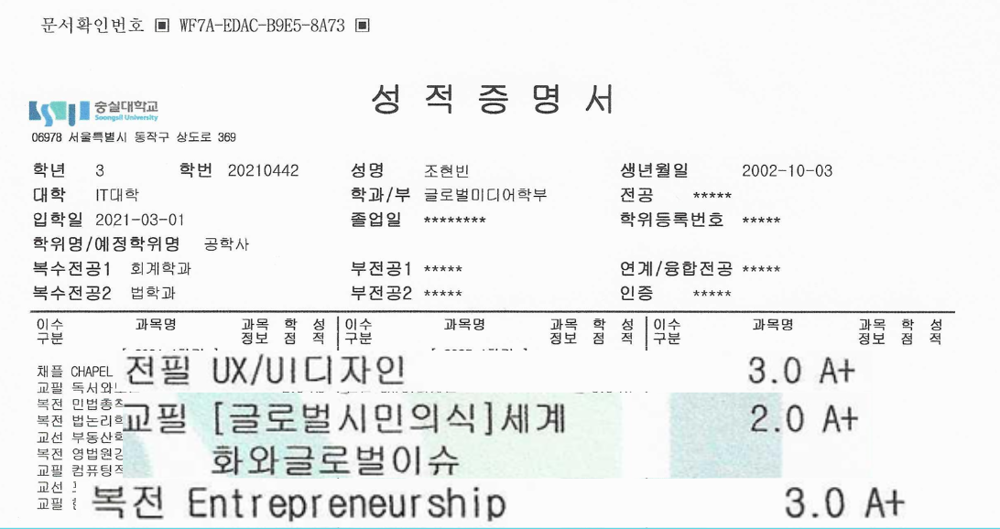

나를 소개합니다!

| 소속 | 취미 | 성격 | 화법 |
|---|---|---|---|
| 숭실대학교 글로벌미디어학부 | 음악듣기, 노래방가기, 부동산 분석 | 일이나 업무에 있어서는 꼼꼼한 편이고, 잘 모르는 분야의 일이라도 관심이 생기면 그것에 대해 영상, 서적 등의 도움을 받거나 아니면 온라인 학습을 통해 스스로 학습해나가고자 하는 경향이 있습니다. | 평소 애매하게 말하면 소통의 오류가 생긴다고 생각하기에, 상대방을 존중하는 선에서 직설적으로 말하는 것을 좋아합니다. |
법학과 재학 기간에 한 분야에 대한 깊은 통찰과 소통 능력을 습득하였고,
Step.2회계학과 복수전공 기간에 경영학 수업을 통한 경영 및 고객 분석 전략 능력, 그리고 프로젠테이션 능력을 습득하였고,
Step.3현재 글로벌미디어학부 재학 중, 앞서 쌓아 왔던 여러 능력들을 코딩과 접목 및 융합하여 하나의 결과물을 만들어 낼 수 있는 사람이 되었습니다.
고로 저는, 본 수업에서 필요한 역량인 고객에 초점을 맞춘 기획과 본 기획을 토대로 중간 결과물을 만들어 낼 수 있는 코딩능력, 이 중간 결과물을 토대로 최종 결과물을 보여주는 프레젠테이션 능력 이 삼 박자를, 뛰어나지는 않지만 어느정도 만족할 정도 수준의 결과물을 만들어 낼 수 있는 사람이라고 말씀드릴 수 있을 것 같습니다.
